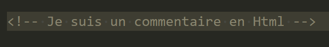
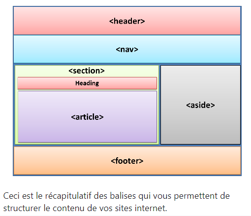
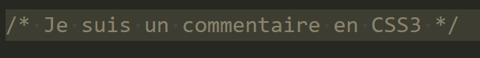

Signification : HTML
Hypertext Markup Language c'est un langage de balise qui définit la structure de votre HTML est qui permet d'afficher des informations , pour cela on y déclare des élèments dans des balises appeler tags en anglais, des zones et tout ce qui devra être présent sur la page.Html n'est pas un langague de programmation il est interpreter par le navigateur.
Les commentaires en HTML il suffit de mettre le signe balise ouvrante suivi d'un point d'exclamation 2 tiret du 6, le contenue de notre commentaires, puis a nouveu 2tiret du 6 est le signe de la balise fermente.
Exemple concret dans votre code HTML personnel
Rappel important les commentaires pour des site publier, sont a limiter est il sont tout de même visible, donc jamais d'information confidentiel en commentaire!
Qu'est qu 'une Balise ?
Les balises HTML sont les éléments de base du codage HTML. Elles sont utilisées pour mettre en forme un texte, structurer et hiérarchiser le contenu d'une page. Les balises indiquent également au navigateur comment afficher la page en question.
On va voir un certain de nombre de balise durant ce cour les plus utiliser bien sur il en existe plein d'autre voici un exemple ci-dessous
Ils existent deux types de balise.
Le premier type: les balise ouvrante /fermante ou appeler aussi balise de couple qui contient l'élèment.Exemple:une section.
Le second type: les balise auto fermante ou appeler orpheline comme la balise img tout est dans la balise.
L'indentation
Balise de type
Le type block :
Les balise de type block prennent toute la largeur est font un retour a la ligne comme la balise "img" ou encore la balise "div"
Le type inline :
Les balise inline elles ne font pas de retour à la ligne comme la balise "a" ou encore la balise "span"
Structure de contenue de site en HTML5
Signification : CSS
Cascading Style Sheets: feuille de style en cascade autrement dit un langage de mise en forme, de design, il permet de styliser les informations, on va passer par du positionnement, des couleurs, des polices d'écriture est bien d'autres.
On as différents moyen de sélèctionner l'élèment html que l on veux modifier ou déplacer.En Css nous appelerons cela un sélecteur, on peut utiliser le nom de la balise html.
Une des propriétées trés utile pour placer nos élèments est la proprietée "display" elle aura comme valeur en géneral "Block" ou "Inline".Elle va gérer le fait que la balise prennent ou non toute la largeur de la page web.Les élèments se placent les un en dessous des autres si ils sont "block" sinon ils seront les un a coter des autres "inline"
Propriter de dimenssion
Il existe 4 proprieter importante la largeur ,la hauteur ,la marge interieur et la marge exterieur
Pour La largeur on utilisera la proprietée widht qui prend en valeur des px ,des vw,des em(voir rem) ou des %.
Pour la hauteur on utilisera la proprietée height qui prend en valeur des px ,des vh,des em(voir rem) ou des %.
Pour la marge interieur on utilisera la proprietée padding qui prend en valeur des px ,des em(voir rem) ou des %.
Pour la marge exterieur on utilisera la proprietée margin qui prend en valeur des px ,des em(voir rem) ou des %.
L'avantage avec les pourcentage c'est que la taille d'ecran s'adapte,l'inconvenient moins precis qu'un pixel.
L' indentation
L' indentation permet d'avoir un code plus clair plus lisible,il est donc fortement recomander d' indenter votre code.
La W3C
Le W3C ou World Wide Web Consortium désigne un organisme international à but non lucratif. Son rôle est de définir les standards techniques liés au web.
Le W3C met à disposition un espace de validation pour vérifier que l'on a bien respecter les régles,un code valide est un code propre.Ci dessous je vous ai mis les liens cliquer vous serez dessus!
Redirige vers page validateur W3C HTML5 Redirige vers page validateur W3C CSS